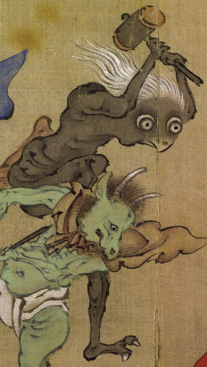

鳥のような顔の黒い化物。白い髪をなびかせ、目玉は丸く、鼻と口は嘴のようになっている。体はやせて、腰のあたりの骨が浮き出ている。両手で槌をつかんで振り上げ、片足をあげている。
著作者：木舜／出典：親書誌：U426_nichibunken_0155：東都画家妖怪画帖；トウトガカヨウカイガチョウ／日付：2010／資源識別子：U426_nichibunken_0155_0001_0004
Copyright (c)2010- International Research Center for Japanese Studies, Kyoto, Japan. All rights reserved.